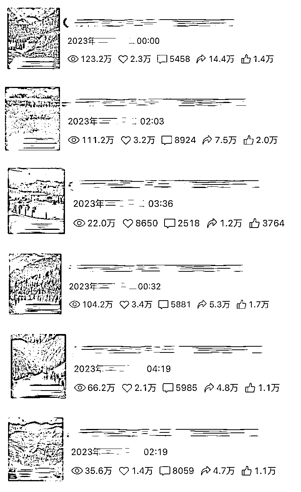
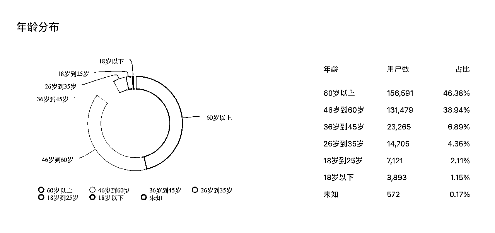
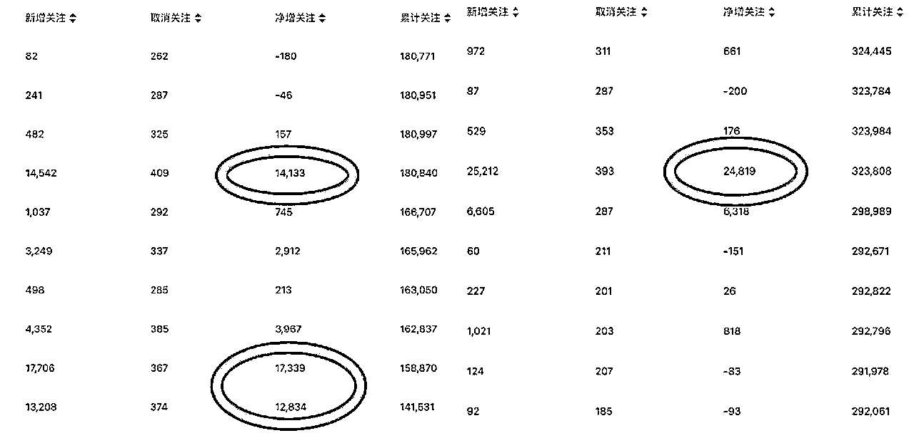
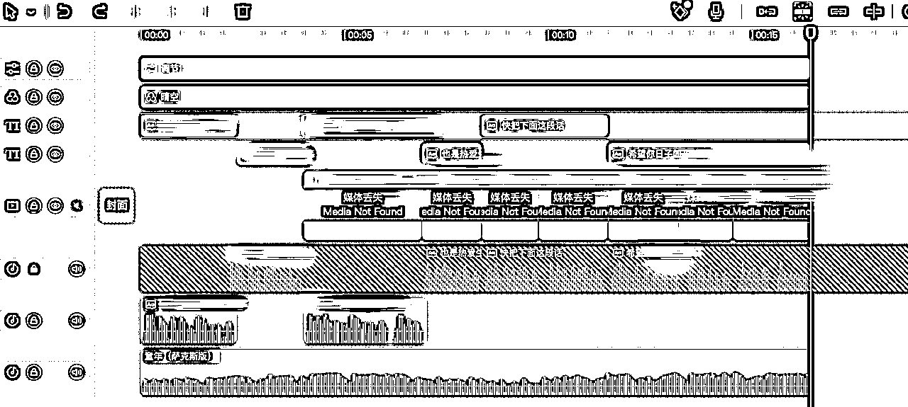
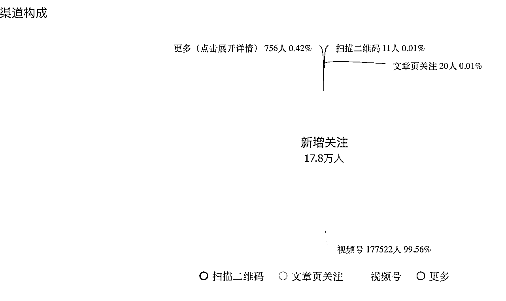
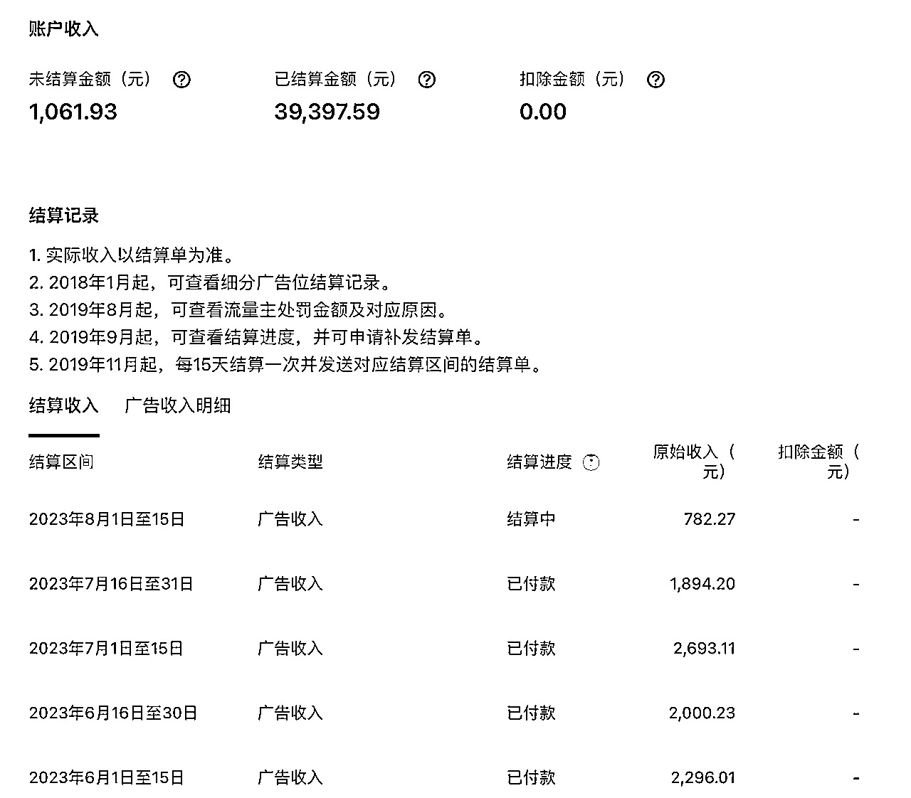
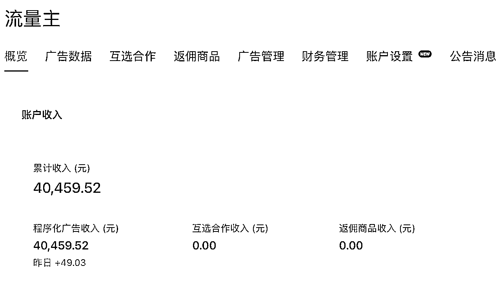

来源：https://rm1nv0sw1r.feishu.cn/docx/IZLid1QW0olfErxVEUqcyQ5xnZe
很多大佬一直在说视频号机会多多，但对于新手，能够快速拿到正反馈，才能够坚定地做下去。
因为我之前是旅游博主，视频号刚出现的时候，我就已经被邀请入驻了，但当时发的内容播放量只在1000左右徘徊，只有几次过万，再加上当时的变现方式少，让人没有持续更新的动力。
去年我才又重视视频号这个平台，并且发现了这个平台的主流人群以及他们喜欢的内容。今天就跟大家分享一下视频号涨粉的异常值，如何制作涨粉内容并持续变现。
想要走捷径，就要对使用视频号的人群进行分析。
年轻人已经被五花八门的自媒体形式养刁了，想要年轻人关注点赞评论，需要我们用心制作内容，很消耗精力和时间。
但是有一类人，他们不要求内容有多精美，有多实用，他们喜欢点赞，喜欢转发分享，他们对于画面没有太高的要求。
（下面以我做的祝福类账号为案例，截图于9月8日，有些信息已进行打码）

我们可以看到这些视频的阅读、点赞、转发数据都很好。
大家可以猜一下这些观众的年龄。
不知道你有没有猜到，他们几乎都在45岁以上

做什么样的内容，一定要明确你的内容吸引的是什么群体。
例如我做的早安祝福类视频，吸引的是喜欢听吉祥话的，喜欢分享内容给子女、亲戚的老年人。
只要我们的内容能够吸引到他们，他们就会自行点赞、转发。
那根据某平台的机制，这些行为给我们的视频带来更多的热度，对于我们出10w+的爆款是非常有利的。
我们做内容一定要摆正心态，不是我们自己做的内容不好，而是对于互联网来说，真的有捷径可走，真的有些赛道一发就爆，那些就是我们要学习的爆款内容。
在任何平台，逻辑都是共通的，要以做爆款为目的去做视频。
一个爆款视频，能带来几千几万的涨粉，甚至可以说，一个号的涨粉，都是爆款视频带来的，其他视频只是在凑数量，几乎没有用。
给大家看一下数据会更加直观。

可以看到一个爆款视频就能带来2w+的粉丝，我们不要纠结于一时的流量，但每做一个视频，必须要符合我们分析出的爆款逻辑。
1、新号起号
新注册的视频号，或者之前没有发过内容的视频号
如果之前发过内容但是数量不多，也可以用，转型需要一段时间才能恢复正常流量（200阅读）
2、账号起名
如果要做祝福类的，名字中最好含有搜索词
例如：早安祝福、天天祝福、中老年祝福语等
3、账号头像
直接用老年人喜欢的照片
例如：山水风景、财神、XX祝福的字
4、刷对标视频
不要搜索，只看系统给推荐的视频
如果刷到对标视频，视频类型可以宽泛一些，比如老年人群爱看的正能量、语录等，但是不符合老年人群的，就不要停留，直接划走
可以适当给符合条件的视频点赞
你会发现一段时间后，推送给你的视频越来越精准
5、对标账号
找几个蓝v或者一看就是机构做的号，看他们发什么
账号资料为蓝v账号，一般是XX传媒公司、XX网络公司
账号的内容形式和话术基本一致
视频的画面用风景的就都是风景、用小和尚的就都是小和尚，还有虚拟的老爷爷、老奶奶、小孩子，有些还是真人出镜拍摄的
为什么让大家找这些做对标呢？
一般这些账号都经历过好多次内容形式更新，更有参照价值
6、素材搜集
山水风景、日出日落、AI小孩、AI小和尚等类型
这些素材在各平台都能下载，我是直接买的起号素材，只要画面符合人群，无需纠结用什么素材
当然你找到的画面如果更吸引人，能够超越别人，会更好
7、话术搜集
祝福类的视频，视频中搭配的话术尤其重要，而且要埋几个小钩子，让人心甘情愿去点赞转发
例如：
1⃣️今天是XX年XX月XX日，恭喜你，屏幕前的大福星，你家有喜事了，因为你心地善良，懂得感恩，好运和福气都来了，他们会让你平平安安，健健康康，事事顺心，开心快乐，荣华富贵！留下一句我全收了，接福接好运！
2⃣️今天是XX年XX月XX日，吉人自有天相，您是吉人，老天保佑，当您刷到这个视频，恭喜您要转运了，祝您从今天开始，家里没病人，出门遇贵人，平安喜乐，万事顺遂！赶快写下您的愿望，定会一一实现！
遇到这样子的爆款视频要学会分析，拆解话术，这样才能总结出自己的风格。
首先是点名日期是今天，第二刷到这条视频是你有福气，第三是祝福的话，第四是你也要转发给你的家人让他们也有这样的祝福，第五是你在评论区评论一下就会更有福。
做好自己的话术库，做视频进行测试，如果一个视频的话术有爆文，就换日期，一直用到那个话术恢复正常流量为止。
厉害的话术能帮助一个视频引发转发评论，从而达成爆款涨粉。
8、视频制作
我用的是剪映，建立视频轨道、建立音轨（配音、背景音乐）、文字轨道、滤镜、调节
自己制作好视频模版，每次只需要替换视频素材和文字就行了
念话术的音频我是直接用的剪映内的【文本】-【智能字幕】-【识别字幕】的功能

剪视频是做自媒体的基本功，大家一定要多加练习，找到自己适合的剪辑模版
9、视频发布
如果是习惯用电脑工作的人，可以尝试在电脑上批量制作视频，用视频号网页端定时发布。
视频号助手：https://channels.weixin.qq.com/login.html
推荐发布时间：晚上10点之后
推荐发布频次：5条
推荐时间间隔：1小时以上
如果发布一周后播放量没到1000就隐藏，不要纠结，因为我们做的视频有实效性，是不会有长尾流量的。
这样我们的视频号首页只留下数据好的视频，会引起更多人关注。
例如高考前一段时间爆火的视频内容
视频画面：奔腾的骏马
视频配音：祝福我的孩子，高考顺利，马到成功……
一样的视频逻辑，结合特殊节日（春节）、特殊日期（高考）也会出现爆款。
大家从做账号开始就要想好自己怎么进行变现，再做内容！
祝福视频再转到其他内容基本没有流量，如果不变现相当于废号，不如做其他的内容。
下面给大家介绍两种变现方式：
1⃣️公众号承接粉丝，用文章变现细水长流。

同管理主体的公众号可以绑定视频号，视频号挂公众号文章链接。
文章也要发同样群体喜欢看的内容，吸引进公众号。
公众号流量主


路径越长越会发生粉丝流失，用公众号做承接不是最优解，但胜在保险。
因为开了流量主后，每次文章的点击都会带来收益。
2⃣️微信群承接，XX文章共享群，XX好物福利群等
视频号简介可以直接留微信号，把粉丝加到微信私域中，再进行变现
视频号的变现方式还有很多，保持空杯心态，向有成果的人学习，希望能与大家共同讨论。